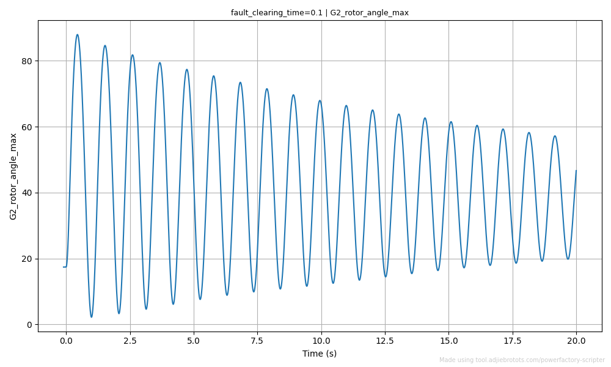
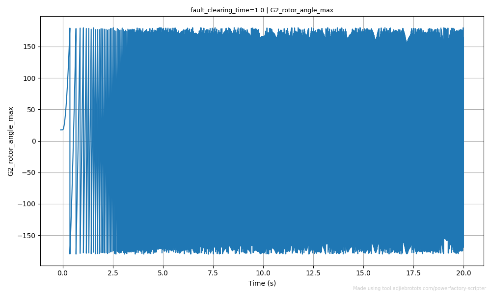
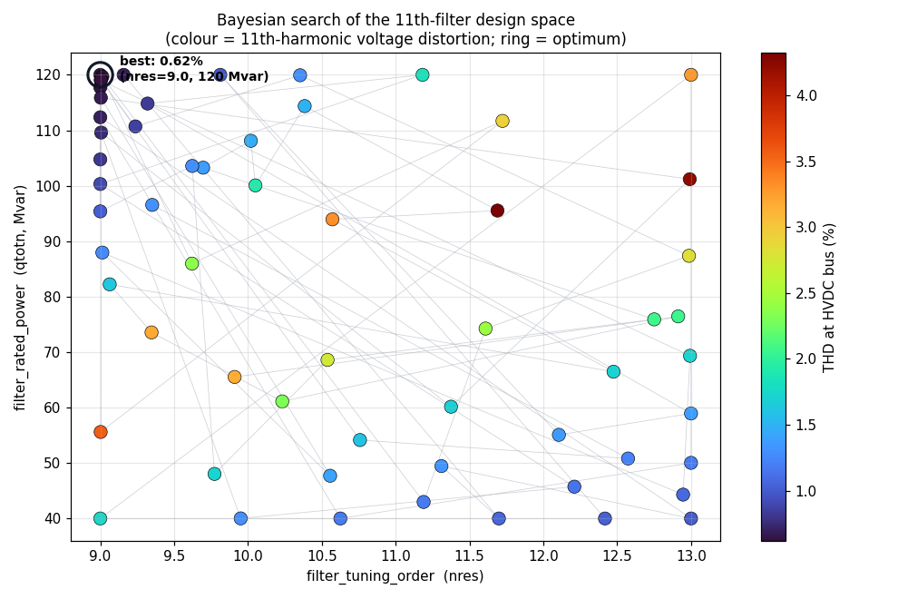
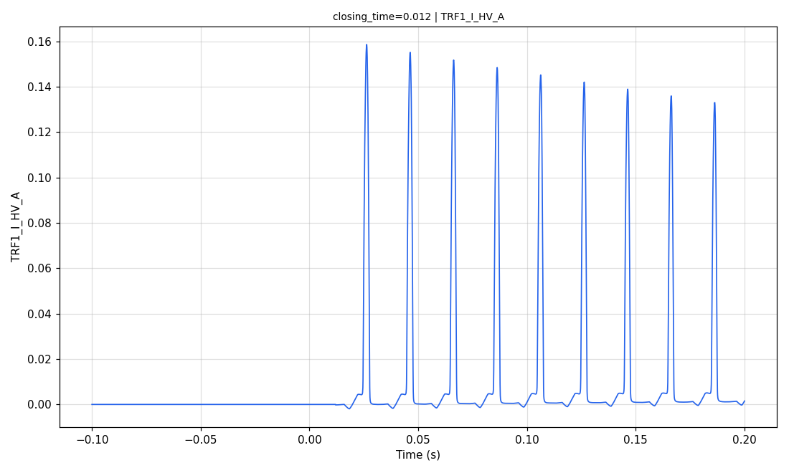
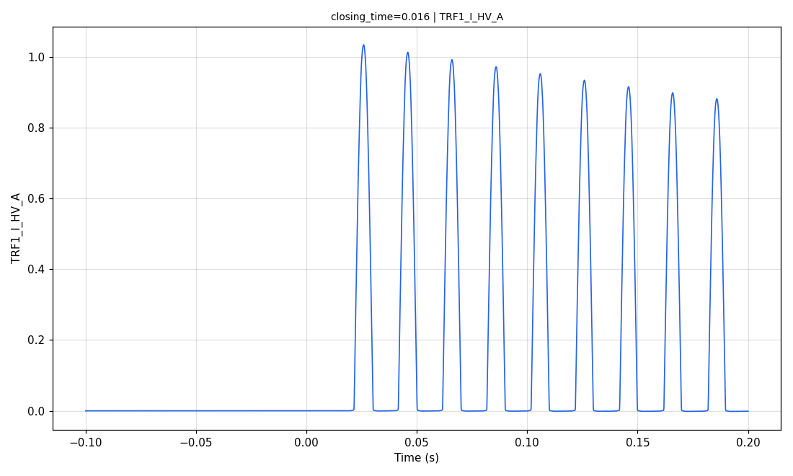
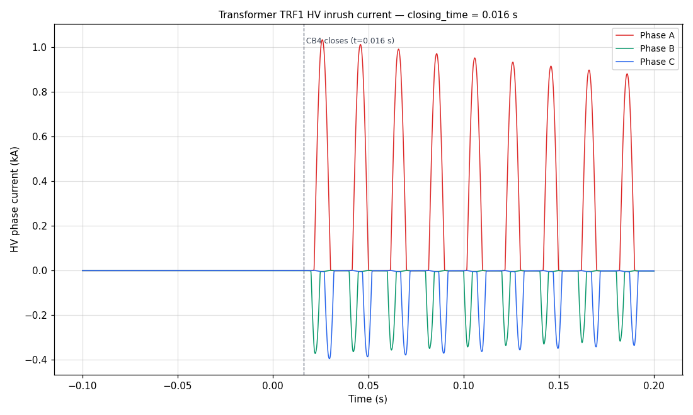

Samples & Guides
Worked examples showing how to set up the tool for common power-system studies. Each one runs on a demonstration project that ships with PowerFactory, so you can reproduce the results without building a network first.
Built-in Models Used
The samples use three example projects that come with PowerFactory. Open the one a sample names and you are ready to run it — there is nothing to build.
A small textbook network. Big enough to study power flow and generator behaviour, small enough to follow by eye.
A network built for harmonics work, with the filters the harmonic sample tunes.
A network built for switching studies, with the detailed transformer and breaker the EMT sample needs.
Measure how each generator's MW output shifts the active-power flow on Line 5-7 and
Line 7-8 — the generation-shift (transmission loss) factors. The load flow sets
the slack machine G1, so sweep G2 and G3 instead and record
G1 alongside the two line flows. The slope of the resulting table is the MW change per
1 MW of G2 or G3.
- Slack machine:
G1.ElmSym(Bus 1); its dispatch is an output, not an input - Dispatchable generators:
G2.ElmSym(Bus 2),G3.ElmSym(Bus 3); swept viapgini - Monitored lines:
Line 5-7.ElmLne,Line 7-8.ElmLne, active power at the from-end (m:P:bus1) - System: 230 kV, 60 Hz; base-case dispatch G2 = 163 MW, G3 = 85 MW (G1 ≈ 71.6 MW)
- Loads held constant: Load A 125 MW (Bus 5), Load B 90 MW (Bus 6), Load C 100 MW (Bus 8)
| Name | Object | Attribute | Lower | Upper | Step |
|---|---|---|---|---|---|
.py).
The script writes a CSV: the swept inputs, the convergence flag, then the three outputs. Real values from a Nine-bus run (rounded):
G2_dispatch,G3_dispatch,Converge?,G1_dispatch,Line_5_7_MW,Line_7_8_MW 120,45,True,152.83,-43.20,76.20 120,65,True,132.88,-50.74,68.43 120,85,True,113.18,-58.22,60.70 120,105,True,93.70,-65.63,52.99 120,125,True,74.47,-72.98,45.31 140,45,True,133.08,-55.53,83.48 160,45,True,113.54,-67.76,90.77 180,45,True,94.21,-79.86,98.09 200,45,True,75.10,-91.83,105.42 ... 200,125,True,-0.74,-120.55,74.57
Reading the shift factor: hold one generator fixed and divide the change in a line's MW by the change in that generator's MW. Fitting the run above gives:
- Line 5-7: ≈
−0.61 MWper MW of G2, ≈−0.37 MWper MW of G3 - Line 7-8: ≈
+0.37 MWper MW of G2, ≈−0.39 MWper MW of G3 - Slack G1: ≈
−0.97 MWper MW of G2 — it picks up whatever G2/G3 drop
A negative Line_5_7_MW means power flows from Bus 7 toward Bus 5 (the
m:P:bus1 from-end convention): as G2 at Bus 7 ramps up it pushes more power back along
Line 5-7 and more forward into Line 7-8 toward Load C.
Use a Bayesian optimiser to find the G2 and G3 dispatch that
minimises total network active-power losses. The slack machine G1 balances
each evaluation, and the loss is read from the grid summary (ElmNet
c:LossP).
- Slack machine:
G1.ElmSym, balances each candidate dispatch - Optimised variables:
G2.ElmSym/G3.ElmSympgini - Objective: minimise total active losses =
*.ElmNetc:LossP(summed across every matched grid) - Bounds: G2 50–160 MW, G3 20–105 MW (within machine ratings)
- Loads constant; base-case losses ≈ 4.64 MW
- Algorithm: Bayesian (
gp_minimize), 60 evaluations
| Name | Object | Attribute | Lower | Upper | Step |
|---|---|---|---|---|---|
.py).
The script prints the best objective value and writes every evaluation to the CSV.
*.ElmNet matches two grids — Nine-bus System and
PowerFactory's auto-generated Summary Grid, which reports the same c:LossP
— so the objective is their sum, ≈ 2× the physical loss. That rescales the printed
value but not where the minimum sits. Real values from a 60-evaluation run (rounded):
[objective] 'total_losses' matched 2 columns; using their sum.
... (one line per evaluation)
Optimisation complete. Best value: 5.3461
# Run{timestamp}.csv (selected rows)
G2_dispatch,G3_dispatch,Converge?,total_losses_Nine-bus System,total_losses_Summary Grid,G1_dispatch
138,36,True,3.0313,3.0313,144.03
159,72,True,4.0488,4.0488,88.05
99,28,True,3.0991,3.0991,191.10
97,74,True,2.7062,2.7062,146.71
88,70,True,2.6740,2.6740,159.67
89,71,True,2.6734,2.6734,157.67
88,72,True,2.6731,2.6731,159.67 <- best dispatch
The optimiser converges on G2 ≈ 88 MW,
G3 ≈ 72 MW (slack G1 ≈ 159.7 MW), cutting the
per-grid loss from ≈ 4.64 MW to ≈ 2.67 MW. The printed best value
(5.3461) is that same loss counted across both matched grids; target a single grid
(Nine-bus System.ElmNet) instead of the wildcard to read it directly. The optimiser enforces
no generator or thermal limits beyond your bounds, so check the result is physical.
Apply a three-phase fault, clear it by opening a breaker after a fixed delay, and sweep that
fault-clearing time from 0.1 s to 1 s with an RMS simulation at each value.
Each run tracks the relative rotor angle (c:firel) of G2 and G3.
Clear too late and a machine loses synchronism, its rotor angle swinging through ±180°, so the
critical clearing time is the longest delay the system survives.
- Study case:
02- Five Cycles Classical SG Model(RMS, classical synchronous-machine models) - Fault cleared by
Switch Event.EvtSwitchin the study case's simulation event list - Fault-clearing time = the event's absolute time
e:time, swept 0.1–1.0 s in 0.1 s steps (10 RMS runs) - Monitored machines:
G2.ElmSym(Bus 2),G3.ElmSym(Bus 3); rotor anglec:firelin degrees, relative to the reference machineG1(Bus 1) - Stability criterion: out of step when the rotor angle reaches a maximum > 170° and a minimum < −170° (a full pole slip)
- Simulation window: 0–10 s
| Name | Object | Attribute | Lower | Upper | Step |
|---|---|---|---|---|---|
{output_dir}/graph)
{output_dir}/graph)
The graph is enabled only on the two Maximum
outputs. Maximum and minimum read the same c:firel trace, so one Time-vs-angle PNG
per machine covers both; enabling it on the minimum outputs would just duplicate the plot.
def stability_verdict(G2_rotor_angle_max, G2_rotor_angle_min, G3_rotor_angle_max, G3_rotor_angle_min):
g2_lost = G2_rotor_angle_max > 170 and G2_rotor_angle_min < -170
g3_lost = G3_rotor_angle_max > 170 and G3_rotor_angle_min < -170
return "Not Stable" if (g2_lost or g3_lost) else "Stable"
Arguments must match the names of the four rotor-angle outputs above. A machine that slips a pole
swings past +170° one way and below −170° the other, so the verdict returns Not Stable
as soon as either generator hits both extremes.
.py).
Switch Event must exist in the active RMS study case. Ten RMS runs take a few minutes.The script writes a summary CSV: the swept clearing time, the convergence flag, the maximum and
minimum c:firel of each machine (degrees), and the stability_verdict. Rotor-angle
plots for G2 and G3 are saved as .png in
{output_dir}/graph/, one per clearing time. Real values from a Nine-bus run (rounded):
fault_clearing_time,Converge?,G2_rotor_angle_max,G2_rotor_angle_min,G3_rotor_angle_max,G3_rotor_angle_min,stability_verdict 0.1,True,87.94,2.19,61.12,2.15,Stable 0.2,True,179.99,-179.99,179.99,-179.97,Not Stable 0.3,True,180.00,-180.00,179.98,-180.00,Not Stable 0.4,True,180.00,-179.98,123.11,-41.33,Not Stable 0.5,True,179.99,-179.99,113.39,-40.68,Not Stable 0.6,True,179.99,-179.99,179.99,-179.98,Not Stable 0.7,True,179.99,-180.00,180.00,-179.97,Not Stable 0.8,True,179.97,-179.99,179.99,-179.99,Not Stable 0.9,True,179.99,-179.97,179.95,-179.97,Not Stable 1.0,True,179.99,-180.00,179.98,-180.00,Not Stable
The system survives 0.1 s — both machines swing and settle (G2 peaks at
≈88°, G3 at ≈61°) — but by 0.2 s the angles run away to ±180°, so the
critical clearing time lies between 0.1 s and 0.2 s. In the 0.4–0.5 s rows
only G2 slips a pole while G3 stays within ±170°, yet the verdict still reads
Not Stable: one machine losing synchronism is enough.

fault_clearing_time = 0.1 s, Stable: G2's rotor angle swings then damps back toward its pre-fault value.
fault_clearing_time = 1.0 s, Not Stable: G2 slips poles, its rotor angle wrapping continuously through ±180°.Both are G2_rotor_angle_max plots from {output_dir}/graph/. The damped swing
against the runaway saturation is what crossing the critical clearing time looks like.
Assess the steady-state impact of losing any single transmission line. The Contingency problem type resolves every matching line at runtime from a wildcard query, so nothing has to be enumerated by hand. The script runs a base case, then one load flow per line, recording bus voltages, line loadings and convergence for each.
- N-1 contingency mode
- All six lines are 230 kV, so the filter
e:Unom ≥ 220keeps all of them - Every bus voltage and line loading is monitored
Select Contingency as the Problem Type. Contingency Config replaces the Input Variables section, which is hidden.
| # | Element Query | Filter Attribute | Op | Filter Value |
|---|---|---|---|---|
| 1 |
.py).
The script writes a summary CSV covering all nine buses and six lines. The first two columns are
the contingency and its convergence status; the rest are the outputs, each named after the variable and
the element's loc_name (e.g. bus_voltage_Bus 5,
loading_Line 5-7):
Contingent Element 1,Converge?,bus_voltage_Bus 5,bus_voltage_Bus 6,bus_voltage_Bus 8,loading_Line 4-5,loading_Line 5-7,loading_Line 7-8 Base Case,True,0.996,1.013,1.016,14.15,21.45,18.94 Line 5-7,True,0.938,0.975,1.001,36.03,,40.33 Line 7-8,True,0.974,0.999,0.969,17.20,40.15, Line 8-9,True,0.990,1.009,0.978,18.87,15.74,27.19 Line 6-9,True,0.968,0.964,1.005,14.04,36.40,6.34 Line 4-6,True,0.999,0.942,1.006,20.01,13.88,27.30 Line 4-5,True,0.839,1.020,0.989,,40.29,8.34
Converge? = False on a row means the load flow did not solve with that line tripped.
Scan the loading columns for post-contingency overloads (>100%).
The Resonance Studies project, study case
01.1 Simplified Network Model: a 400 kV / 50 Hz system with an HVDC converter
station on the 400 kV busbar, carrying two identical filter banks (11th,
13th and 24th high-pass branches) plus switchable capacitor banks. The Nine-bus
System used by samples 01 to 04 has no converter or filters, so it cannot host this study.
Use a Bayesian optimiser to tune the HVDC 11th-harmonic filter
(HVDC Filter1 11th.ElmFilter) so it minimises the voltage distortion at the HVDC
busbar caused by the converter's 11th harmonic. The search covers the filter's
tuning order (nres) and rated reactive power
(qtotn). Tuned near the 11th and sized right, the filter absorbs the harmonic; but the same
capacitance can form a parallel resonance with the network and amplify it instead, leaving a
sharp ridge in the objective surface to steer around.
The shipped study case has no harmonic source and two parallel filter banks, so the 11th filter has almost no measurable effect on its own. Two changes in PowerFactory turn it into a single-bank tuning study — standard practice in HVDC filter design, where the converter is a harmonic current source and one bank is studied at a time.
- Add a converter harmonic source at the HVDC 400 kV busbar: an
ElmIaccurrent source with aTypHmccurspectrum carrying the 11th harmonic, standing in for the characteristic 11th a 12-pulse converter injects. - Leave
HVDC Filter1as the only bank in service: setHVDC Filter2 11th,HVDC Filter2 13th,HVDC Filter2 24th HP,HVDC_C-Bank1andHVDC_C-Bank2to out of service.
- Study case:
01.1 Simplified Network Model(balanced harmonic load flow,ComHldf) - Optimised element:
HVDC Filter1 11th.ElmFilter(single-tuned shunt filter) - Optimised variables: tuning order
nres(9 to 13) and rated reactive powerqtotn(40 to 120 Mvar) - Objective: minimise the voltage THD at the HVDC busbar, read at terminal
400_G3.1.ElmTerm(m:THD, in %) - As-built starting point:
nres = 11,qtotn = 56 Mvar, giving ≈ 1.61 % THD - Algorithm: Bayesian (
gp_minimize), 60 evaluations
| Name | Object | Attribute | Lower | Upper | Step |
|---|---|---|---|---|---|
The HVDC busbar is named 4, which repeats across many substations, so it is not a
unique query. Terminal 400_G3.1 has a unique name and sits on the same electrical node as
the filter, so read m:THD from there instead.
.py).
ComHldf harmonic load flow. Requires pip install scikit-optimize.The script prints the best objective value and writes every evaluation to the CSV: the two filter parameters, the convergence flag, then the busbar THD. A spread of rows from a 60-evaluation run (rounded):
Optimisation complete. Best value: 0.6197
# Run{timestamp}.csv (selected rows)
filter_tuning_order,filter_rated_power,Converge?,THD_HVDC_bus
9.909,65.52,True,3.175
12.913,76.45,True,2.065
11.689,95.52,True,4.325 <- filter capacitance resonates with the network at the 11th
12.991,101.18,True,4.228 <- resonance ridge again
10.232,61.11,True,2.299
9.351,96.55,True,1.305
9.014,119.67,True,0.629
9.004,119.13,True,0.630
9.000,120.00,True,0.620 <- best
The optimiser cuts the busbar THD from ≈ 1.61 % at the as-built
nres = 11, qtotn = 56 Mvar to
≈ 0.62 %, about 60 % lower. Along the way it probes the
parallel-resonance ridge, where filter capacitance and network inductance resonate at the
11th and THD jumps above 4 %. Every evaluation, coloured by THD:

The best point sits at the edge of the searched range
(nres = 9, qtotn = 120 Mvar), so the true optimum lies
outside the bounds: widen them, or add a rating or fundamental-voltage constraint, to find the interior
minimum. The optimiser enforces no filter or busbar limits beyond your bounds, so check the winning design
is physically sensible.
The Switching Transients project, study case
03.1 Transformer Energisation I: a 400 / 110 kV, 50 Hz network where
transformer TRF1 is energised from the 110 kV side by closing breaker CB4.
The Nine-bus System used by samples 01 to 04 lacks the detailed transformer and breaker models an EMT
study needs.
Energise transformer TRF1 by closing breaker CB4, sweeping the
closing time across one 50 Hz cycle (0 to 0.02 s) with an EMT simulation at each
value. Inrush depends on where on the voltage wave each pole closes, so the peak moves between the three
phases as the closing time shifts. Each run records the peak HV-side current per phase and saves the
current-versus-time waveform.
- Study case:
03.1 Transformer Energisation I(EMT,ComIncwithiopt_sim = 'ins'thenComSim), operating scenarioTransformer Energisation - Energised transformer:
TRF1.ElmTr2, monitored on the HV-side phase currents - Breaker:
CB4, closed byCB4.EvtSwitchin the study case's simulation event list - Swept input: the switch event's closing time
e:time, 0 to 0.02 s in 0.004 s steps (6 EMT runs) — one full 50 Hz cycle of point-on-wave angles - Monitored outputs: the
Maximumof the HV phase currentsm:I:bushv:A,m:I:bushv:B,m:I:bushv:C(kA), each with its time-versus-current graph saved - Units on this study case: the switch-event time is in seconds but the simulation time base is in milliseconds, so a Stop Time of 200 means 0.2 s; the pre-energisation window starts at −100 ms
| Name | Object | Attribute | Lower | Upper | Step |
|---|---|---|---|---|---|
{output_dir}/graph)
{output_dir}/graph)
{output_dir}/graph)
Maximum records each phase's largest positive current. Inrush can be
positive or negative depending on the phase and closing angle, so a phase with a negative inrush reads
near zero in the table while its real peak shows in the graph. Add a Minimum output per
phase to get the negative peaks as numbers too.
.py).
{output_dir}/graph/.The script writes a summary CSV: the swept closing time, the convergence flag, then the peak HV
current per phase (kA). The inrush waveforms are saved as .png in
{output_dir}/graph/, one per phase per closing time. Real values from a run (rounded):
breaker_closing_time,Converge?,TRF1_I_HV_A,TRF1_I_HV_B,TRF1_I_HV_C 0.000,True,0.114,0.623,0.002 0.004,True,0.000,0.935,0.003 0.008,True,0.000,0.003,0.937 0.012,True,0.159,0.002,0.591 0.016,True,1.034,0.001,0.001 0.020,True,0.114,0.623,0.001
Each phase peaks at a different closing time, because the three pole voltages are 120° apart.
The largest positive peak here is ≈ 1.03 kA on phase A at 0.016 s, where
that pole closes near a voltage zero and drives the core deep into saturation. The
0.000 s and 0.020 s rows match: one cycle later is the same point on
the wave.

closing_time = 0.012 s: phase A closes near its voltage peak, so the inrush stays
small (≈ 0.16 kA).
closing_time = 0.016 s: phase A closes near a voltage zero, so the inrush jumps to
≈ 1.03 kA and decays slowly.Both are TRF1_I_HV_A graphs from {output_dir}/graph/. The offset,
unidirectional pulses decaying over many cycles are the signature of transformer inrush, and the
difference between the two closing times is the point-on-wave effect. All three phases from one run:

closing_time = 0.016 s. Current is zero until
CB4 closes, then each phase draws an offset, slowly decaying inrush.Custom Function Library: Pre-Made Scripts for a Custom Calculation Output
A Custom Calculation output runs your own Python on every iteration and writes what it returns as an extra column in the results CSV. These 14 are ready to use: pick one from Insert a pre-made function in the Scripter, or copy it from here and edit the constants at the top.
- Return one scalar. A number, a string,
True/False, orNone. Never a tuple: one function is one column. - Name each argument after a variable. Arguments are matched by name against the run's
input and output variables. A name that matches nothing arrives as
None. - Handle
None. An unread result arrives asNone, and an exception costs the whole row, so guard your arguments and divisions. - Point at single elements. A wildcard output such as
*.ElmLnebecomes one column per element, so it cannot be a single argument. - Chain in order. A function may take another custom function's result, as long as that one is listed earlier.
Frequently Asked Questions
The API Path points to the PowerFactory Python API folder, inside the Python folder of your PowerFactory installation, which holds one sub-folder per Python version. For example:
C:\Program Files\DIgSILENT\PowerFactory 2024\Python\3.10\
Pick the sub-folder matching the Python version you run your script with.
| Study Type | PF Command | Use to Analyse ... |
|---|---|---|
| Steady State | Load Flow (ldf) |
Steady state voltages, currents, loading, etc |
| Dynamic RMS | RMS simulation (rms) |
Fault response, generator dynamics, inverter dynamics, etc |
| Dynamic EMT | EMT simulation (emt) |
Switching transients, power electronics, detailed waveforms, etc |
| Harmonic | Harmonic load flow (hldf) |
Total harmonic distortion (THD), individual harmonics, etc |
Python File (.py): best for production use, scheduled runs, or importing the script as a module. Run it from a terminal or your IDE.
Notebook (.ipynb): best for exploratory work, step-by-step debugging, or inline plots and tables next to the code. Open it in Jupyter.